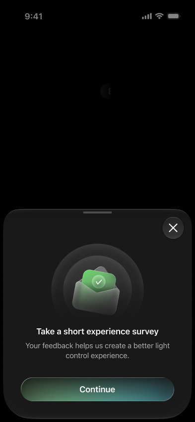
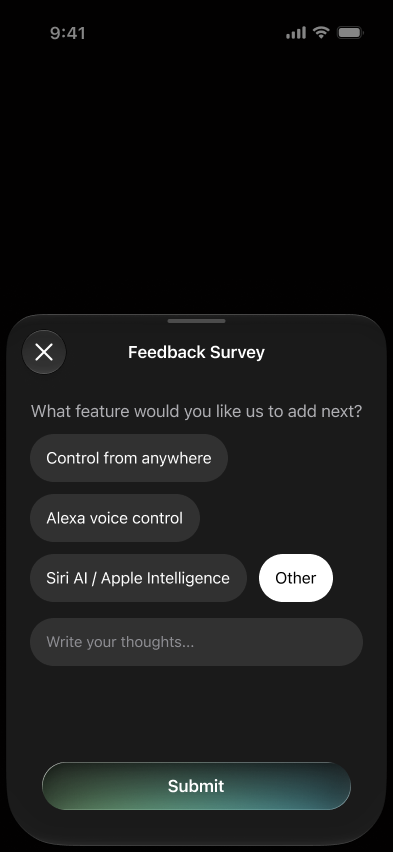
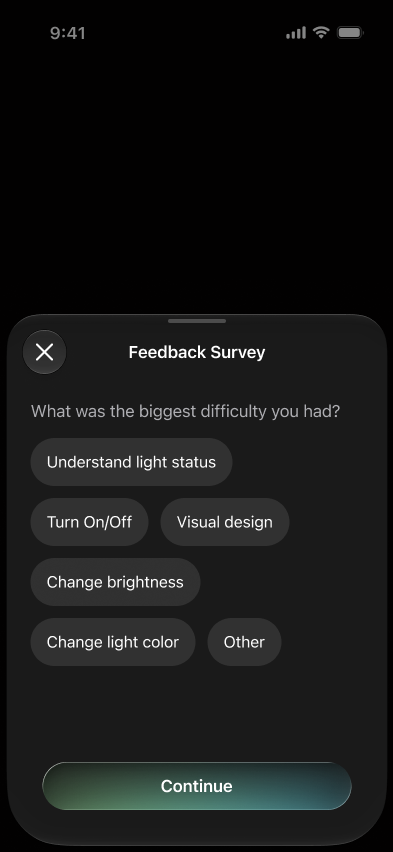

01 · Product context
After six months of shipping, it was time to listen
- Product cycle: After six months of continuously shipping features and optimising both product and monetisation flows, the team entered the final stage of its HEART-based product cycle: understanding user Happiness.
- Year-end opportunity: Before prioritising the rest of the year, we needed to pause and listen—especially ahead of the festival period, when the light-control product had greater opportunity to grow.
- Research question: Can people control their lights easily, reliably and as intended?
82.17% of successfully connected users performed at least one light-control action in the same session.
The first session averaged approximately 9.4 control actions per user.
These figures confirmed exposure to the core experience; they were not used as trigger rules.02 · Research goal
Stop searching for a perfect moment
The early work became focused on finding a “perfect” survey moment through control counts, sessions, anti-spam timing, safe actions and fallback rules. The trigger research was becoming deeper than the ultimate goal.
The goal was not to build the most complex trigger. It was to collect reliable feedback about light control. That meant first identifying the right audience, then choosing a simple moment to ask them.
03 · Audience
Ask users who can experience control without a paywall interruption
The survey targeted Premium users. They had shown greater commitment, could control lights repeatedly, and were not interrupted by the free-usage limit or paywall. This kept the feedback focused on the light-control experience rather than monetisation friction.
04 · Trigger
Session 2, after the second control action
- Eligible audience: Premium users in their second session after purchase.
- Automatic trigger: Show the survey after the second qualifying light-control action in that session.
- Qualifying actions: On/Off, Brightness or Color.
- No automatic fallback: If the condition is not met before the user leaves, do not trigger the survey in Session 3.
- Voluntary access: Keep the survey available in Settings so users can share feedback at any time.
- User purchases subscription
- Session 2 after purchase
- First qualifying control action
- Second qualifying control action
- Show the survey
Boundary: No automatic Session 3 fallback · Survey remains available in Settings

Users can open the same survey themselves, even when the automatic trigger condition is not met.
05 · Survey structure
One survey, two diagnostic paths
Users slide from Very Hard to Very Easy to rate their control experience. Ratings 4–5 enter the Happy path; ratings 1–3 enter the Not Happy path.
Both diagnostic questions include Other, which opens a free-text field.
Happy path
- Diagnose: Which controls worked well for you?
- Look forward: What feature would you like us to add next?
Not Happy path
- Diagnose: What was the biggest difficulty you had?
- Check the outcome: Were you eventually able to control your lights as intended?

The selected rating determines which diagnostic path follows.
Happy path


Not Happy path


06 · Tracking
Keep measurement focused
Tracking captures progression points rather than each individual chip tap: survey_view, click_continue_button, click_submit_button and click_close_button.
Key parameters include rating, path, selected factor, control outcome, feature request, step, connection type and trigger context. Free-text Other is stored as a string parameter for review in a backend, BigQuery or feedback system—not as a standard GA4 custom dimension because its cardinality is high.
07 · Measurement plan
Turn feedback into product signals
With the survey live, the team is collecting data on completion, dismissal and step drop-off; average ease score, Happy rate and Not Happy rate; positive drivers, pain points, control outcomes and feature demand.
Responses can be broken down by Philips Hue, LIFX, Tuya and Matter. Feature demand comes from Happy respondents; the Not Happy path measures whether users eventually achieved the intended control outcome.
Survey health
Completion rate = survey_submit / survey_viewDismiss rate = survey_close / survey_viewStep drop-off = users reaching each survey step
Control experience
Average ease score = AVG(rating_value)Happy rate = ratings 4–5 / total responsesNot Happy rate = ratings 1–3 / total responses
Diagnostic signals
Positive-driver distribution
Pain-point distribution
Control-outcome distribution
Feature-demand distribution
08 · Learning
The trigger now serves the research goal
The production release uses a measurable trigger tied to actual light-control use, while keeping voluntary feedback available in Settings. Data collection is still in progress, so this case does not yet claim an impact on response quality or control behaviour.